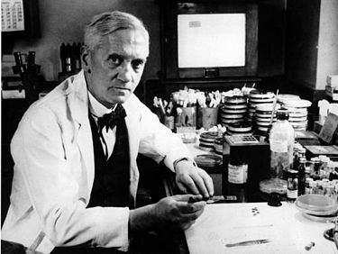

Alexander Fleming
Slumpmässig upptäckt
Flemings upptäckt av penicillin förändrade den moderna medicinens värld, vilket möjliggjorde skapandet av ett antal viktiga antibiotika. Penicillin räddade och räddar fortfarande miljontals människor runt om i världen.
"När jag vaknade i gryningen den 28 september 1928, planerade jag verkligen inte att revolutionera medicinen med min
upptäckt av
världens första antibiotika- eller mördarbakterie," sa Fleming,
"Men jag tror att det är precis vad jag gjorde."
Fleming föddes den 6 augusti 1881 på Lochfield Farm, nära Darvel, i Ayrshire-regionen i Skottland. Han var det tredje av fyra barn.
Fram till 12 års ålder studerade Fleming på en landsbygdsskola i Darvel, och sedan ytterligare två år vid Kilmarnock Academy.
Vid 14 års ålder flyttade han in hos sina bröder i London, där han började arbeta som kontorist på ett leveranskontor,
samt gick kurser på Royal Polytechnic Institute.
Hans äldre bror arbetade redan som ögonläkare och Alexander bestämde sig också för att studera medicin. På läkarutbildningen
vann Fleming ett stipendium 1901. Han fick också stipendier från University of London 1906.
Vid den tiden hade han inte en stark affinitet för något särskilt område av medicinsk praxis. Operationer visade att han kunde
vara en enastående kirurg. Men livet ledde honom på en annan väg, kopplad till "laboratoriemedicin". Som student kom han 1902
under inflytande av patologiprofessorn Almroth Wright. Wright, medan han fortfarande var i militärsjukvården, utvecklade
en vaccination mot tyfoidfeber. Men han hade också andra idéer för att behandla patienter som redan lider av bakterieinfektioner.
Gruppen unga män som gick med Wright, inklusive John Freeman, Bernard Spilsbury och John Wells, kunde inte längre hantera jobbet.
Därför blev Fleming inbjuden att gå med i laget så snart han fick sin examen 1906.
Väl på detta sätt i ett forskningslaboratorium knutet till sjukhuset arbetade Fleming där fram till sin död femtio år senare.
Fleming dog 1955 i sitt hem i London av en hjärtattack. Han kremerades och en vecka senare begravdes hans aska i St. Paul's Cathedral.
- Han är känd för att 1928 ha upptäckt penicillinet
- Fick Nobelpriset i fysiologi eller medicin
- Under första världskriget tjänstgjorde Fleming som kapten i Royal Medical Army